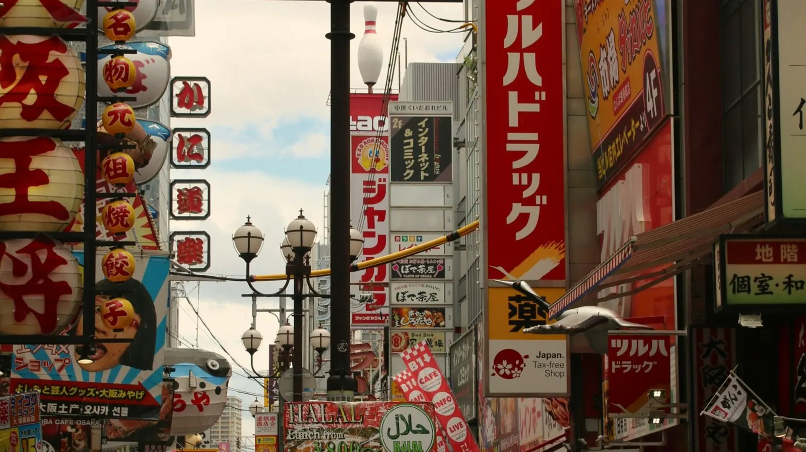

La frase da usare
Attira l'attenzione di un cameriere, poi chiedi:
Per chiamare il personale in modo cortese, inizia con すみません (sumimasen, “mi scusi”). In molti ristoranti è normale dirlo ad alta voce dal tavolo, oppure premere il campanello di chiamata se c'è.
Come dire “il menu in inglese, per favore” in giapponese
Entrambe le frasi sono cortesi. Arimasu ka? chiede se ce l'hanno; o kudasai lo chiede direttamente. Se ricordi una sola parola, “Eigo menyū?” con un sorriso viene capito ovunque.
Come pronunciarla
Dilla lentamente e in modo uniforme. Il giapponese non ha accenti forti, quindi ogni sillaba ha circa lo stesso peso:
- Ei-go — “EI-go” (inglese)
- no — come “no”
- me-nyū — “ME-niu” (menu)
- wa — “ua”
- a-ri-ma-su ka — “a-ri-MAS-ka”; la u finale di masu quasi non si sente
Tutto insieme: “EI-go no ME-niu ua a-ri-MAS-ka?” con un leggero tono che sale alla fine, come una domanda.
Risposte che puoi sentire
Niente menu in inglese? Usa queste frasi
Molti locali piccoli e a gestione familiare hanno solo il menu in giapponese. Raramente è un problema: queste frasi coprono quasi tutte le situazioni:
Puoi anche indicare i modellini di plastica in vetrina, o un piatto che sta mangiando un altro tavolo, e dire kore o kudasai. Quando esci, ごちそうさまでした (gochisōsama deshita, “grazie per il pasto”) è sempre apprezzato.
Come si ordina spesso in Giappone
Macchinette dei biglietti (食券機, shokkenki)
Comuni nei locali di ramen, soba e curry. Scegli e paghi alla macchinetta vicino all'ingresso, poi dai il biglietto al personale. Molte hanno le foto, alcune anche il tasto per l'inglese.
Ordinare con tablet e QR code
Catene, izakaya e sushi sul nastro usano spesso tablet o un QR code sul tavolo. Questi sistemi offrono di frequente l'inglese: cerca il pulsante della lingua o l'icona di una bandiera.
Il coperto negli izakaya
In molti izakaya ricevi un piccolo antipasto che non hai ordinato (otōshi). È un normale coperto, non un errore.
La mancia
In Giappone la mancia non fa parte della cultura del ristorante. Basta pagare il conto: un buon servizio è semplicemente dato per scontato.
Dove è più facile trovarlo
- Zone turistiche affollate come il centro di Tokyo, Kyoto e Osaka.
- Catene di ristoranti e locali dentro grandi stazioni e centri commerciali.
- Locali con l'insegna in inglese o un sito in inglese.
- Ristoranti dove si ordina con tablet o QR code.
Nessuno di questi è una garanzia, quindi conviene comunque avere la frase pronta.
Ti serve più del menu? Leggi le nostre frasi giapponesi per il ristorante: ordinare, allergie e pagare il conto.
Pronto a prenotare?
Link affiliati: se prenoti, 687 può ricevere una commissione senza costi extra per te.
La frase, pronta sullo schermo.
In 687 Japan, l' aiuto per il menu in inglese nella ricerca Cibo tiene 英語のメニューはありますか？ a portata di tocco. Mostrala a schermo intero al personale o fai che l'app la legga ad alta voce in giapponese. I ristoranti con nome o sito in inglese compaiono per primi, così è più facile trovare il menu in inglese; e per tutto il resto Traduci funziona come una conversazione nelle due lingue.